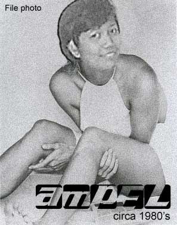

|
2nd Term SY 2002-2003
Arfeli
balanza
Systems
Management Office
| Nickname: |
Ampel |
| Date
of Birth: |
April
19, 1968 |
| Place
of Birth: |
San
Fernando, La Union |
| Languages/Dialects
Spoken: |
English,
Filipino, Ilocano |
| Academic
Information: |
BS
Computer Science in Computer Engineering,
Mapua Institute of Technology |
| . |
Master
of Science in Computer Science, Ateneo Graduate School
of Business (units); Master of Science in Information
Technology, De La Salle University (ongoing) |
-
Simple, sweet, and funny. Don't know nga kung bakit wala pang
bf or asawa, prize catch naman. Pihikan siguro or hinihintay
pa si Prince Charming nya (sana dumating na).
-- Anonymous
Ampel
si ampel kulit...ngiti ka lagi :) sana mahanap mo na ung special
someone mo.
- -Albert
Arf-Arf!
Everyone's favorite sexy(?) girl from SMO. Three-fingered
typist. Laging nakatikwas ang dalawang hinliliit. Napag-iwanan
na ng kalendaryo. Kailan kaya talaga? Easily the century's
most anticipated event! Maarte? Maselan? Mapili? Mataas standards?
Or siguro kailangan lang niya ng Divine Intervention Exceeding
Understanding? You decide na lang. -Harold
ampel,
the most eligible maiden in ITC, is starting to live up to
her trademark of "sexy". if you'd see her old pictures
in ITC, she's gone a long way! a lot of us are volunteering
to look for an eligible partner for her, finance her wedding
expenses.. but she's just keeping mum about her future...not
ready to give up yet...the best is yet to come! (but the sooner
it comes, the better). ampel, always cool despite the pressures
of work and academic deadlines, may the likes of you multiply
in ITC.
-Celine
sexy
and reliable person. will help you with all her extent.
-Weng
Anyone
want a beautiful, sexy lady? Pls return all correspondence
to webmaster@dlsu.edu.ph
Pls specify your objective and do not forget to send your
photos. Only qualified applicants will be entertained. Anyone?
Anyone?
---Anonymous
a
girl marked by simplicity pero sexy, mabait din, wise spender
kaya maraming savings! pautang naman...
--
Anonymous
kasali
pa sya? :) heeheh! the never aging (or ageing-parang accounts?)
ate of so many kuyas. i wonder if meron talaga?just look at
the finger when she eats.
--
Anonymous
She
reminds me of a person named Julius? :)--Vivian
most
eligible bachelorette ng office! super bait na super sexy
pa! wag mong kalimutan ang pustahan natin ha?
--Francis
during
my first days sa itc, takang-taka ako kung bakit nila tinutukso
si ampel na tabachingching, eh ang sexy naman! naks! (ampel,
lapit na christmas, wag limot gift kay mik-mik). she's ITC's
friend ng bayan. I just wonder kung favorite finger-food pa
rin n'ya ang "chestnuts."
-- Joie
<flavorofthetermflavorofthetermflavorofthetermflavorofthetermflavorofthetermflavoroftheterm>
Joie
Alvarez
Documentation
Office
Lourdes
"Dette" Ibay
Computer
Facilities Operations
Gary
Bangud
Computer
Laboratories Office
Meet
the past Flavor of the Terms®:
|